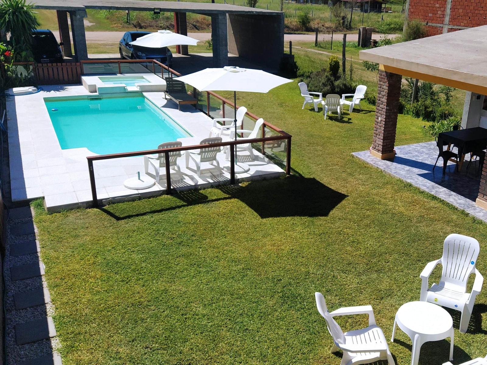
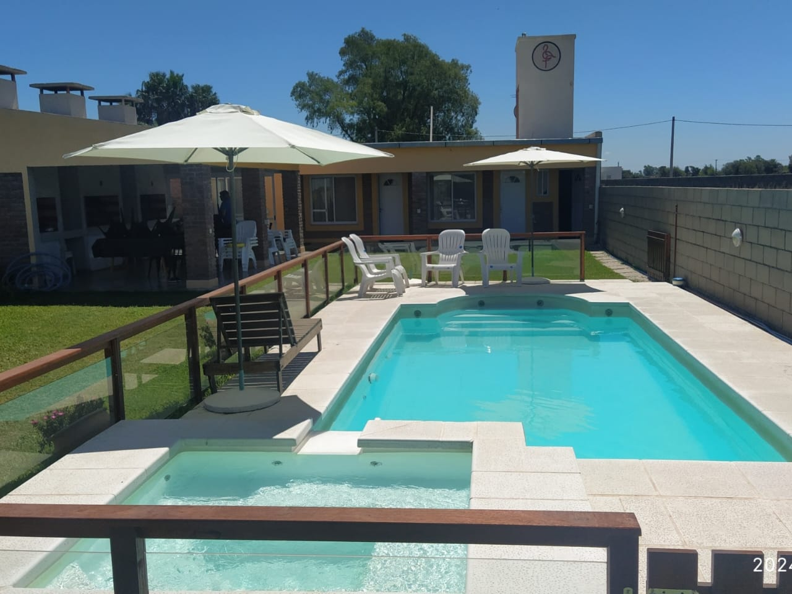
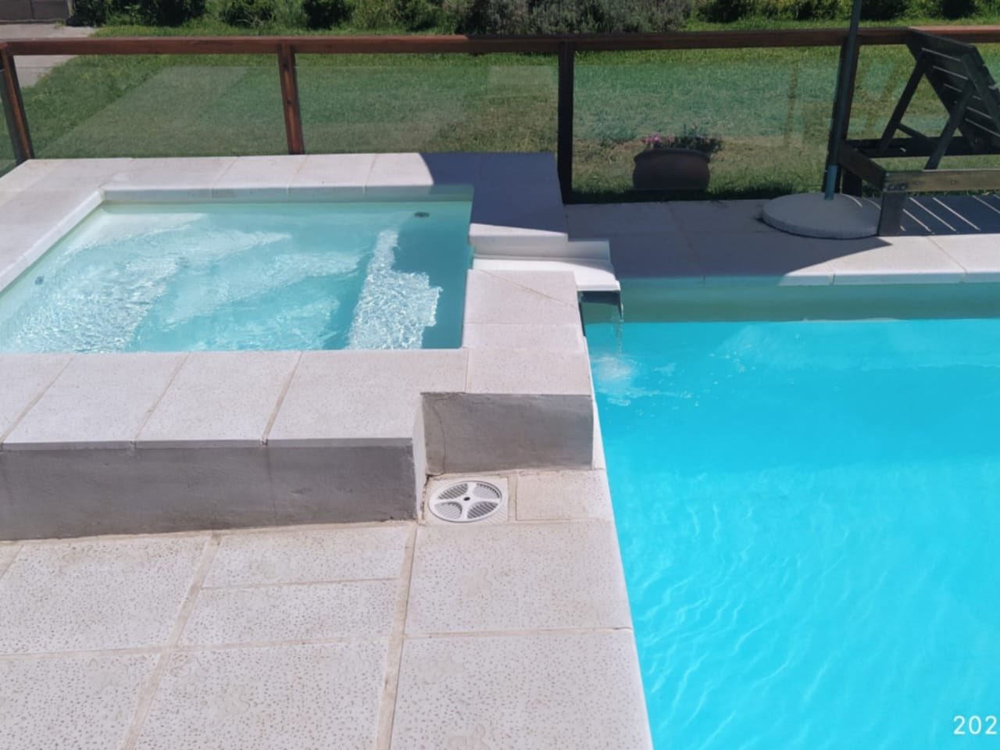
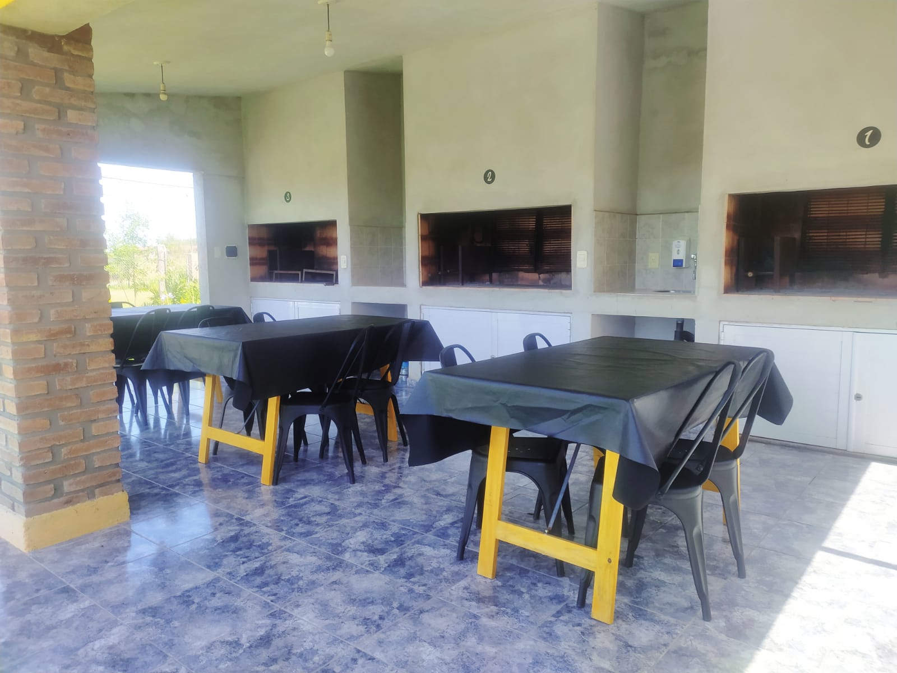

Posada del Flamenco
Miramar de Ansenuza
Miramar de Ansenuza
Ofrecemos alojamiento temporario en la encantadora Miramar de Ansenuza (provincia de Córdoba). Nuestros departamentos te proporcionan un refugio acogedor, con habitaciones que combinan estilo, funcionalidad y todo lo necesario para lograr una maravillosa estadía.
   Nuestro complejo cuenta con 3 departamentos, 2 de ellos con capacidad máxima para 4 personas, y uno con capacidad máxima para 5 personas. Cada departamento cuenta con 1 sommier de 2 plazas, y 2/3 camas de una plaza, baño, cocina completamente equipada, piscina con spa, patio, quincho techado con asadores amplios y cochera de material.
Para una estadía cómoda y confortable, nuestro alojamiento cuenta con los siguientes servicios:
Estamos ubicados en un lugar estratégico de Miramar, equidistantes de varios puntos claves como el centro, la playa principal y el casino. Es un barrio muy tranquilo, libre de ruidos molestos, ideal para descansar y disfrutar de una agradable estadía.
¡Estamos aquí para ayudarte! Contactanos para obtener más información.
Contacto: 03563 15-40-2770